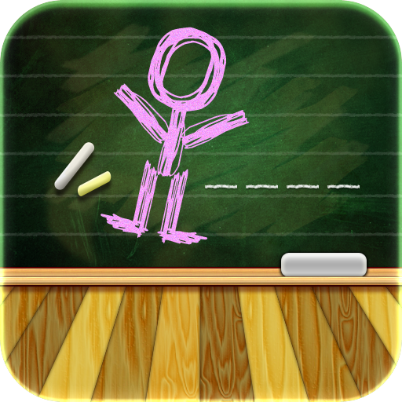

Signature Projects
Location Sharing & FlowerMate Android Application (Group Project)
Technologies: Java, Android Studio, Google Maps API
Description: Developed an Android app for location sharing via email/SMS and flower listing. Integrated Google Maps API for real-time location tracking and RecyclerView for displaying flower details.

Recipe Finder Website (Individual Project)
Technologies: HTML, CSS, JavaScript, Firebase
Description: Built a website to suggest recipes based on ingredients. Firebase integration was used for real-time syncing and offline data storage, ensuring mobile responsiveness.

Game Mechanics iOS App (Individual Project)
Technologies: Swift, UIKit
Description: Developed a Hangman-style game with an on-screen keyboard. Integrated dynamic game logic and implemented win/loss tracking.
